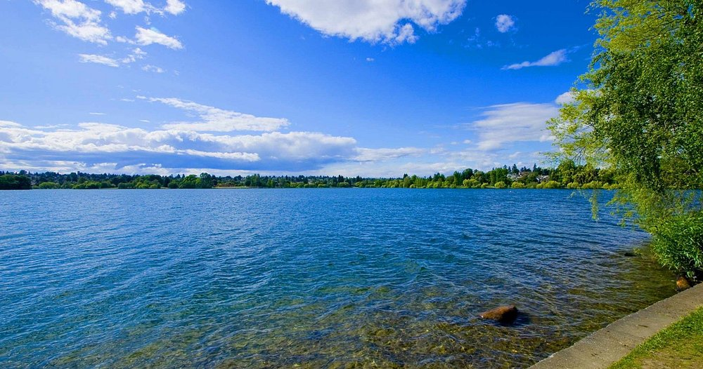

Green Lake
Kayak rentals are available at the lake, but you are also allowed and welcome to bring your personal kayak. The walking trail surrounding Green Lake is 2.8 miles long and wraps along the water on a paved and gravel path. The nearby park has basketball courts and plenty of trees for picnics or relaxing. Swimming is allowed while a lifeguard is on duty.
- Duration: As long as you want
- Price: $0-$50 USD
- Safety: Little to no safety concerns, safe public park